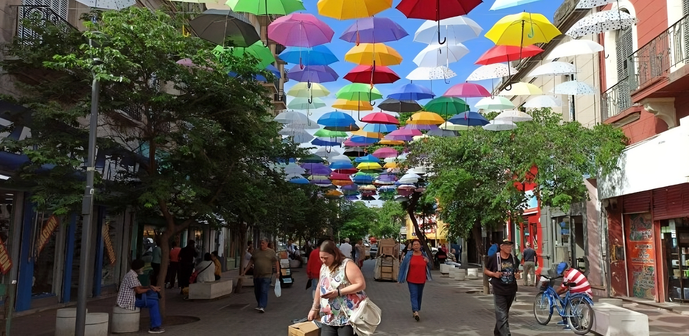

Qué Hacer
¡Bienvenido a Córdoba! Más que un destino turístico, es un universo de contrastes y maravillas por descubrir. Situada en el corazón de Argentina, Córdoba fusiona la esencia de la tradición con la vitalidad de la modernidad. En esta tierra de infinitos matices, encontrarás una rica herencia cultural y arquitectónica que se entrelaza con una diversidad de paisajes sorprendentes.
Nuestra provincia se destaca por su diversidad geográfica, ofreciendo una paleta de colores y experiencias únicas. Prepárate para explorar cuevas, lagos, cascadas y senderos que te transportarán a un mundo de maravillas naturales. A lo largo de una serie de parajes inolvidables, te invitamos a la auténtica esencia de Córdoba y descubrir por qué es un destino que cautiva los corazones de quienes lo visitan.